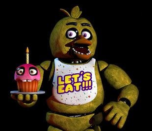

Chica

“I was the first! I have seen everything!”
- Withered Chica
- Chica is a secondary antagonist in the Five Nights at Freddy's franchise. Chica is an animatronic chicken and children's entertainer housed at Freddy Fazbear's Pizza, along with Freddy Fazbear and Bonnie. She is the backup singer standing on the right-side in Freddy's band. At midnight, she is supposedly left in a "free-roaming mode" until 6 AM, to prevent her servos from locking up.
- Along with the other animatronics, Chica will try to forcefully stuff any human she sees after hours into a Freddy Fazbear suit, resulting in death. Chica like the other classic animatronics was once a human child who was killed and now haunts the animatronic looking for revenge against her murderer William Afton.
Physical Appearance
Classic Chica
- Chica is a bright yellow animatronic chicken with a spherically-shaped head, orange beak, magenta eyes, and black eyebrows. On the top of her head are three "tufts" of feathers. She has two talons from each of her orange feet. She wears a white bib that reads "LET'S EAT!!!" in yellow bubble letters, outlined in purple and the bib is flecked with tricolored triangles in patterns of three, and what appear to be tiny stylized pizza slices.
- Like all of the other animatronics at Freddy's, she has an out-of-place set of blocky teeth sticking up from her lower beak. Her endoskeleton teeth can also be seen within the back of her mouth, though these are only clearly visible in certain angles.
Withered Chica
- Her older, withered form, Withered Chica, first appears in Five Nights at Freddy's 2, then later returns in Ultimate Custom Night and Five Nights at Freddy's VR: Help Wanted as an antagonist. She, along with the four other older animatronics have all fallen into severe disrepair and she is replaced by her newer counterpart (Toy Chica) for the "improved" Freddy Fazbear's Pizza due to going through an attempted retrofit and subsequent abandonment of the older model, in favor of Toy Chica, according to Phone Guy on Night 2.[2] For a start, the feminine features have been toned down, and she appears more androgynous as a result, to contrast her more with Toy Chica. Her body seems to have minimal changes. Her beak has a jaw

Alias
Chica the Chicken
Withered Chica
Withered Chica
Occupation
Backup Singer
Affiliation
Freddy Fazbear's Pizza
Owner
Fazbear Entertainment, Inc.
Voice Provider
Darbi Logan
Mascot
Chicken
Skin Color
Yellow
Eye Color
Magneta
Gender
Female
Animatronic Set
Classics/Withereds
Chica as Withered Chica
similar to the ones Withered Bonnie and Withered Freddy have, which appears to be completely unhinged.
Her beak is also more pointed, like that of an actual chicken, and she has even more teeth on her upper
and lower beak. The infamous second set of teeth from the animatronic endoskeleton is also clearly
visible and covered in blood. She has two stumps where her hands used to be, with long wires pouring
forth.
- Chica also seems to be very pushy and determined, as when she gets to the night guard's door, she will stay there for long periods of time far longer than Bonnie would.
- As Withered Chica, in Ultimate Custom Night, she seems to be a contemptuous survivor, feeling strangely aware of the fact that she is damaged. Her voice has a lot of ominous buzzing and fan-like noises in the background. One of her voice lines heavily imply that she was the first murdered victim from the Missing Children Incident.
2. "Uh, by now I'm sure you've noticed the older models sitting in the back room. Uh, those are from the previous location. We just use them for parts now. The idea at first was to repair them...uh, they even started retrofitting them with some of the newer technology, but they were just so ugly, you know? The smell...uh, so the company decided to go in a whole new direction and make them super kid-friendly. Uh, those older ones shouldn't be able to walk around, but if they do, the whole Freddy head trick should work on them too, so, whatever." - Phone Guy, Night 2
3. "There have been Customer Complaints about Chica's acrid smell. Sounds like Chica's been rummaging around the kitchen again."HandUnit, Parts and Service: Chica
Personality
- Based on the Freddy Fazbear's Pizza Theme Song song, Chica is a pushy, gluttonous but lovable singing
animatronic bot who has love for food, especially pizza. The Pizza Party level in Night Terrors also
demonstrates this by actively eating pizza from a room that appears to be the kitchen, and in the first
game, one can hear clanging sounds emanating from the kitchen. In both occasions, she was distracted by
her goal of killing the player, implying that her gluttony can distract her at times. According to
HandUnit's instructions in "Parts and Service: Chica", she still maintains her gluttonous tendencies as
she is covered in pizza.
- Chica also seems to be very pushy and determined, as when she gets to the night guard's door, she will stay there for long periods of time far longer than Bonnie would.
- As Withered Chica, in Ultimate Custom Night, she seems to be a contemptuous survivor, feeling strangely aware of the fact that she is damaged. Her voice has a lot of ominous buzzing and fan-like noises in the background. One of her voice lines heavily imply that she was the first murdered victim from the Missing Children Incident.
Functionality
- In Help Wanted, she has technology similar to the funtime animatronics, although her mechanical inside
parts are not seen, and she has a beak that can pop open immediately like most funtime animatronics at
the push of two buttons.
References
1. "Uh, now concerning your safety, the only real risk to you as a night watchman here, if any, is the
fact that these characters, uh, if they happen to see you after hours probably won't recognize you as a
person. They'll p-most likely see you as a metal endoskeleton without its costume on. Now since that's
against the rules here at Freddy Fazbear's Pizza, they'll probably try to...forcefully stuff you inside
a Freddy Fazbear suit. Um, now, that wouldn't be so bad if the suits themselves weren't filled with
crossbeams, wires, and animatronic devices, especially around the facial area. So, you could imagine how
having your head forcefully pressed inside one of those could cause a bit of discomfort...and death. Uh,
the only parts of you that would likely see the light of day again would be your eyeballs and teeth when
they pop out the front of the mask, heh." - Phone Guy, Night 1
2. "Uh, by now I'm sure you've noticed the older models sitting in the back room. Uh, those are from the previous location. We just use them for parts now. The idea at first was to repair them...uh, they even started retrofitting them with some of the newer technology, but they were just so ugly, you know? The smell...uh, so the company decided to go in a whole new direction and make them super kid-friendly. Uh, those older ones shouldn't be able to walk around, but if they do, the whole Freddy head trick should work on them too, so, whatever." - Phone Guy, Night 2
3. "There have been Customer Complaints about Chica's acrid smell. Sounds like Chica's been rummaging around the kitchen again."HandUnit, Parts and Service: Chica